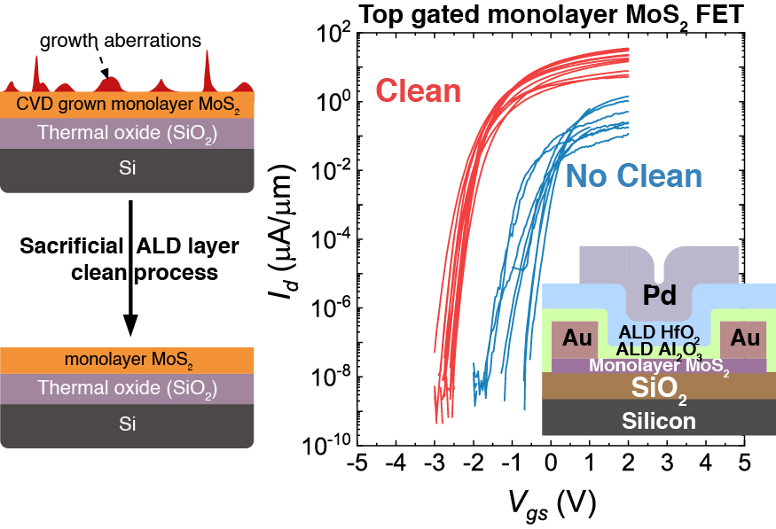
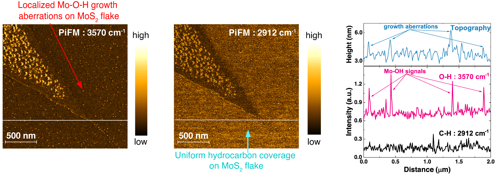
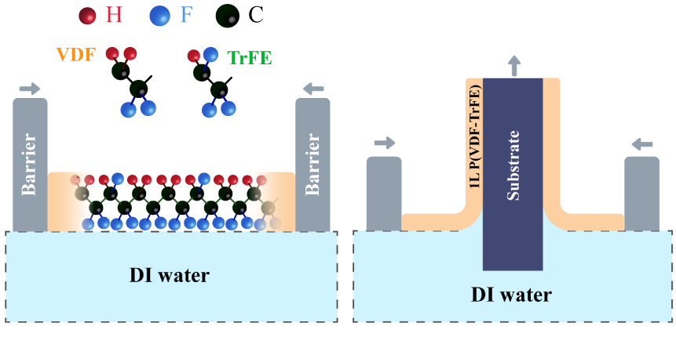
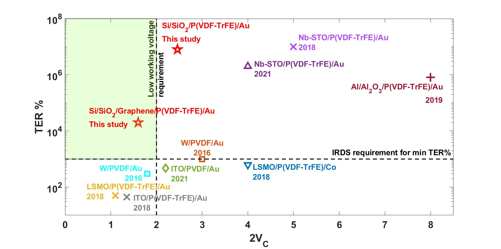
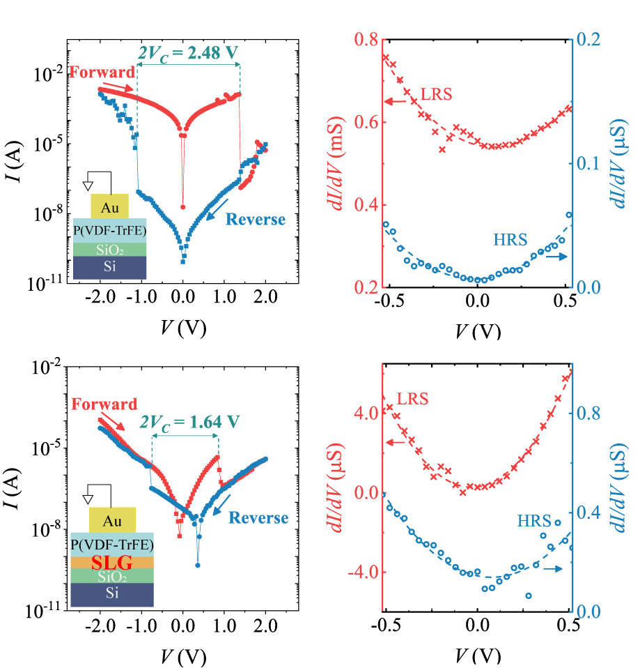
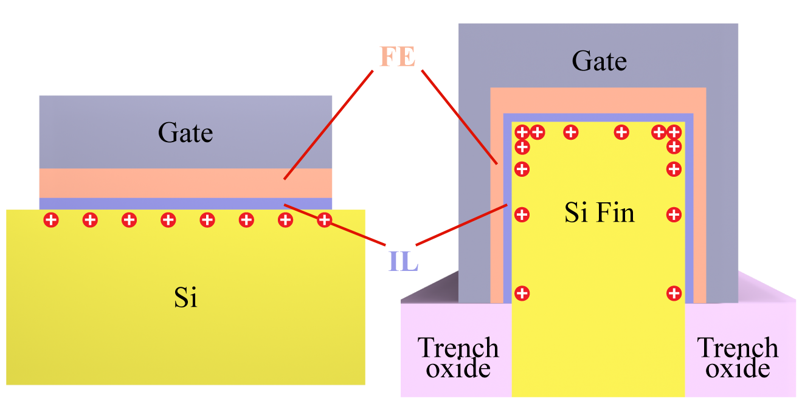
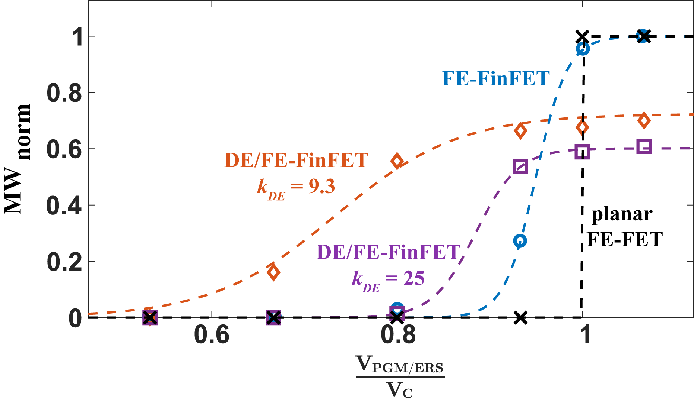
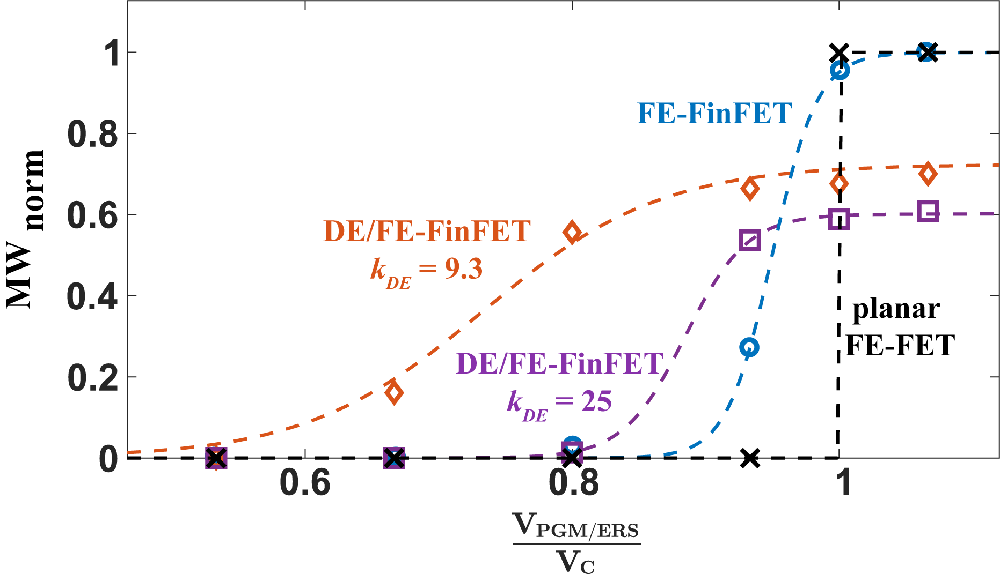

-
Spatio-chemical characterization and elimination of localized growth aberrations on monolayer MoS2 for enhanced performance top gated FETs with scaled ALD oxides
- Applied Surface Science, 2026.png)
Top gated FETs on MoS2
-
Low voltage graphene interface engineered organic ferroelectric tunnel junction devices
- ACS Applied Materials and Interfaces, 2025  -
Low voltage polarization switching in ferroelectric FinFET based memory devices, using electric field nonlinearities
- Published in Journal of Computational Electronics, 2025.png) 
